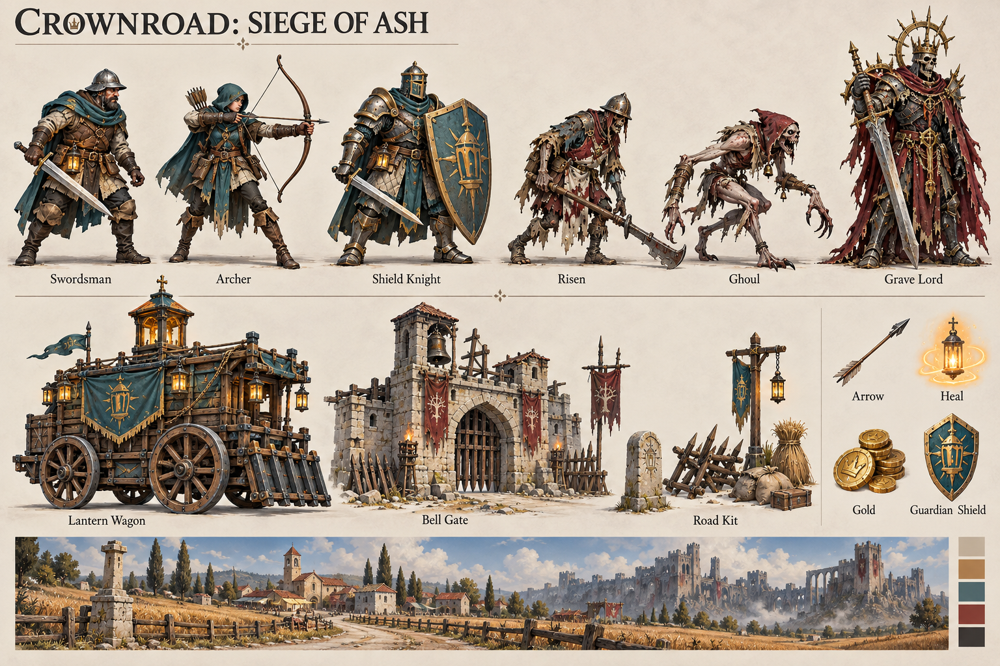
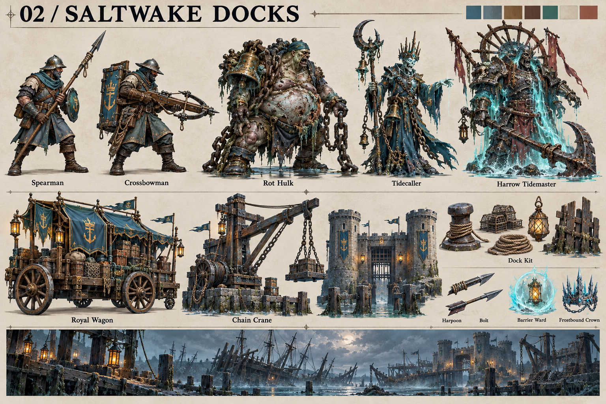
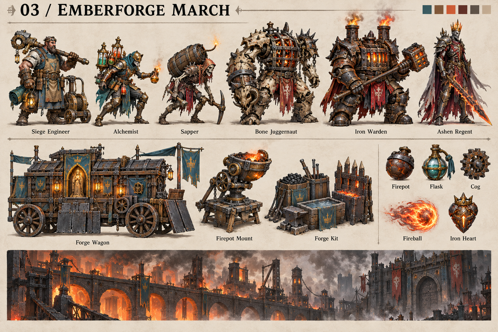
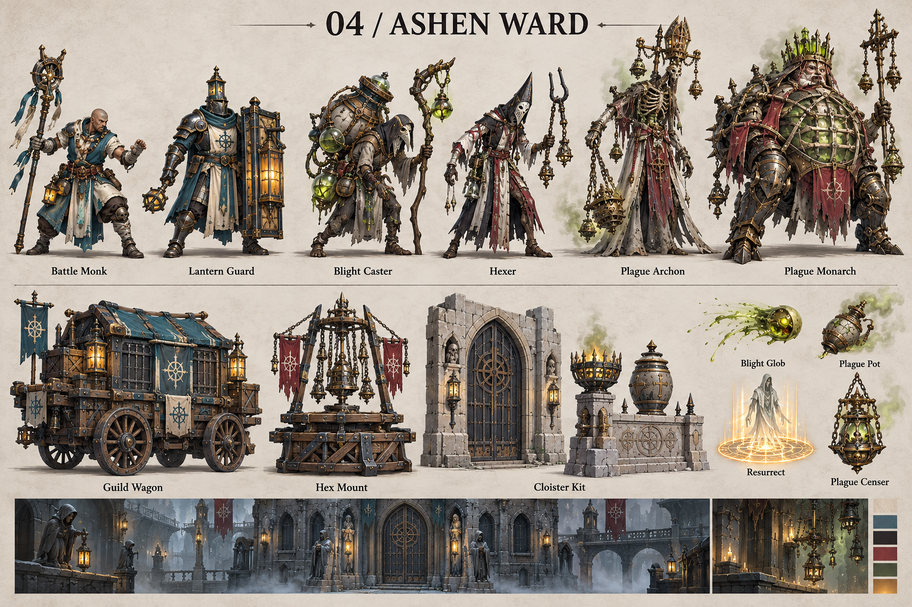
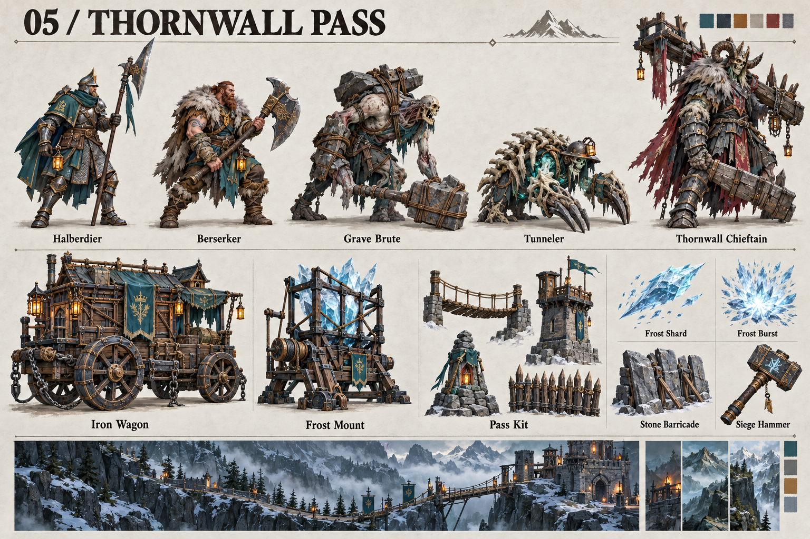
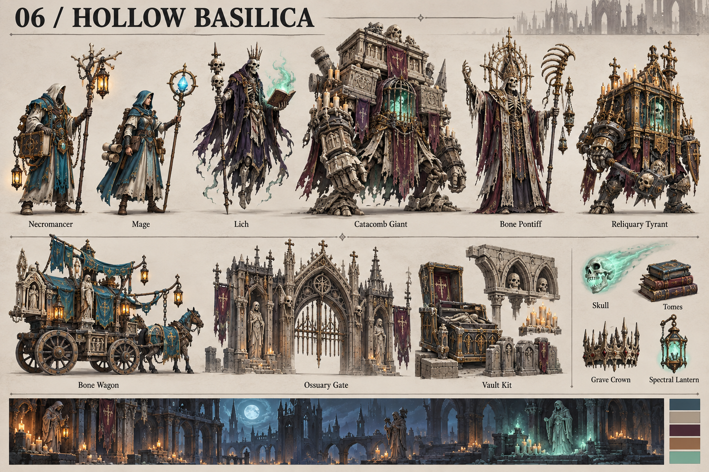
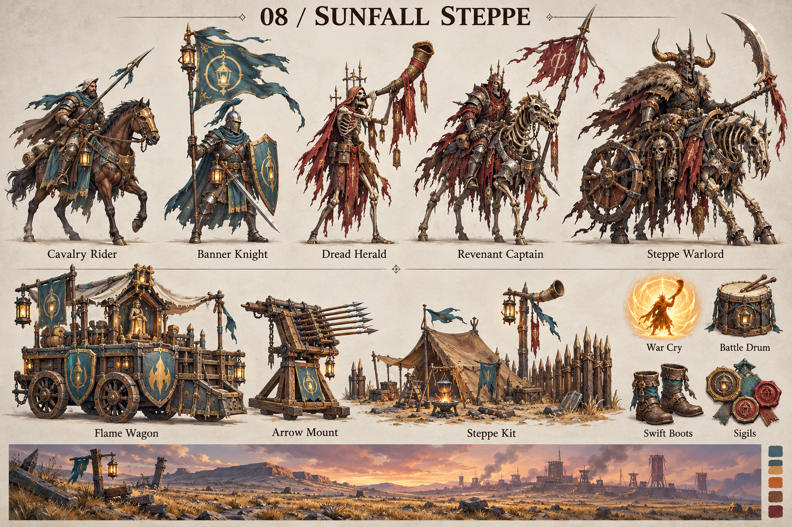
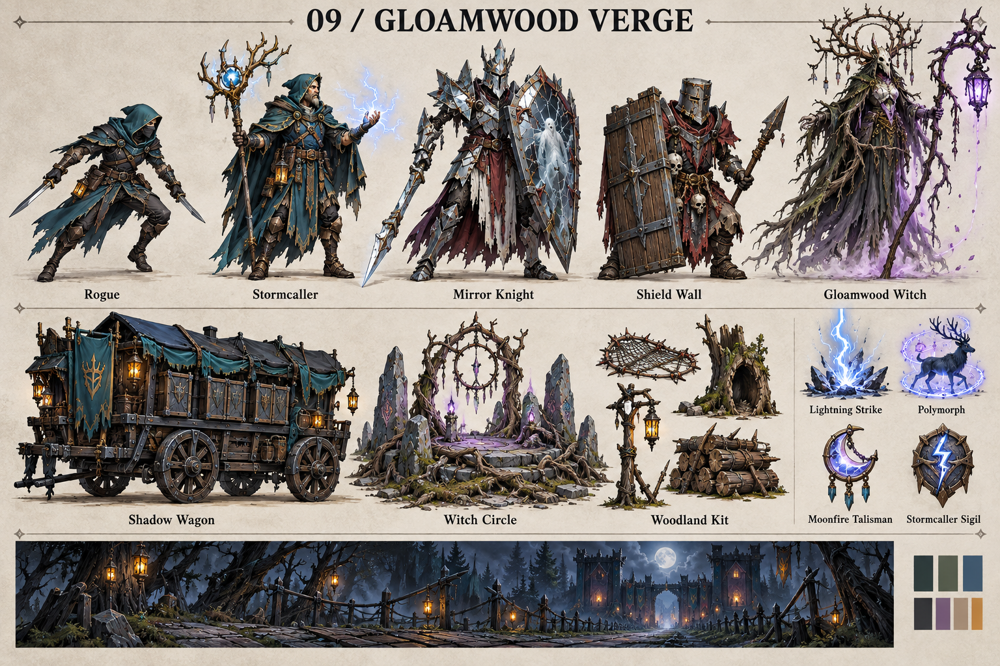
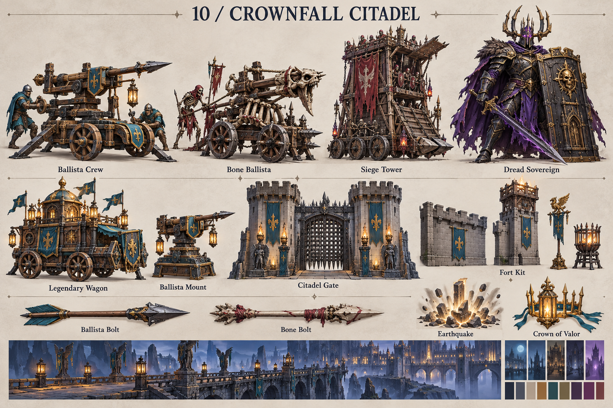

01King'S RoadSwordsman · Archer · Shield Knight · Risen · Ghoul · Grave LordDownload PNG ↗
02Saltwake DocksSpearman · Crossbowman · Rot Hulk · Tidecaller · Harrow TidemasterDownload PNG ↗
03Emberforge MarchSiege Engineer · Alchemist · Sapper · Bone Juggernaut · Iron Warden · Ashen RegentDownload PNG ↗
04Ashen WardBattle Monk · Lantern Guard · Blight Caster · Hexer · Plague Archon · Plague MonarchDownload PNG ↗
05Thornwall PassHalberdier · Berserker · Grave Brute · Tunneler · Thornwall ChieftainDownload PNG ↗
06Hollow BasilicaNecromancer · Mage · Lich · Catacomb Giant · Bone Pontiff · Reliquary TyrantDownload PNG ↗
08Sunfall SteppeCavalry Rider · Banner Knight · Dread Herald · Revenant Captain · Steppe WarlordDownload PNG ↗
09Gloamwood VergeRogue · Stormcaller · Mirror Knight · Shield Wall · Gloamwood WitchDownload PNG ↗
10Crownfall CitadelBallista Crew · Bone Ballista · Siege Tower · Dread SovereignDownload PNG ↗